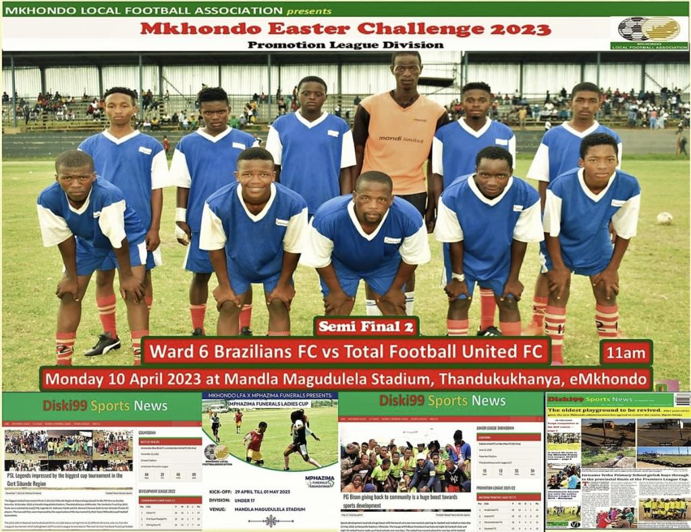

Ward 06 Brazillian FC was reformed in 2022. Initially it was Brazil FC that was formed by Mnguni family in the early 2000s, based at Ndlozana farm.
It was never registered with Mkhondo Local Football Association. On 2022 it was reformed into a new structure, joined by new members in the management level.
It was then established to accommodate the whole Ward to an extent of the whole region and named Ward 06 Brazillian.
On the same 2022 the club was reformed it was registered with the Mkhondo local Football Association in the lower league division namely ‘Super League’,
with high spirit and dedication Ward 6 Brazillian FC family prospered to become the champions of 2022/2023 season in the Super League
and got promoted to Promotion League.
During the 2022/2023 season the club played two tournaments which is Festive and Easter Tournament, both tournaments the Club was eliminated in the semi-finals.